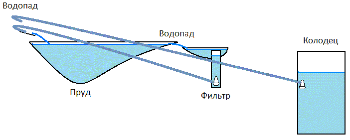
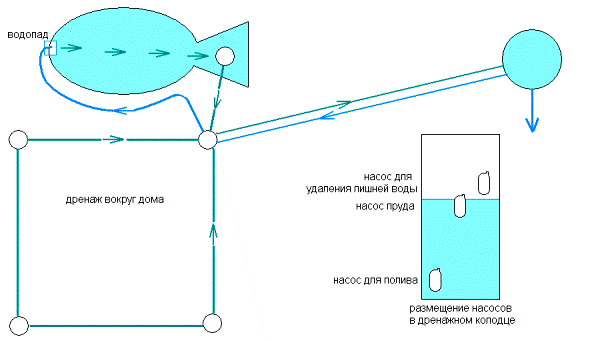
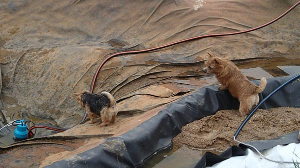

{kind=link}
Вода для пруда
Содержание
Круговорот воды
Сначала я опишу, как было задумано снабжение пруда водой. Возможно эту схему я когда-то действительно реализую.
Воду для наполнения пруда берём из колодца. Для красоты и для насыщения воды кислородом в пруду должен быть водопад. Для очистки поверхности пруда от одуванчиков, листочков и случайного мусора должен быть постоянно работающий фильтр. Это не плавающий в пруду скиммер , а отдельное устройство, которое находится вне основного пруда, так как в пруду не должно быть ни проводов, ни шлангов, ни насосов. Вода из пруда стекает через понижение бортика в сторону фильтра, и затем попадает в фильтр. Так мусор с поверхности пруда уносится течением в фильтр, и он выполняет функцию скиммера.
Насос фильтра подаёт воду на водопад, и в итоге вода движется по кругу. Насос колодца включается когда нужно повысить уровень воды, которая может испаряться, использоваться для полива, или убывать по другим причинам.

Проект подачи воды
Насос фильтра включён всегда. Он сам останавливается если поступление воды в фильтр уменьшится. При этом уровень воды в фильтре снижается, и поплавок насоса выключает насос. При остановке насоса фильтра срабатывает реле тока, и подаёт напряжение на насос колодца. Насос колодца повышает уровень воды в пруду, и работа фильтра восстанавливается. Система автоматически поддерживает такой уровень воды, чтобы фильтр и водопад всегда работали.
Вместо реле тока можно использовать поплавковый переключатель, размещённый в колодце фильтра выше насоса. Однако это было бы дополнительное оборудование в воде, и это увеличило бы количество подводных кабелей. При повторении такой схемы учтите, что в воде должны быть проложены неразрывные кабели. У меня подключение кабелей насосов сделано внутри герметичного щитка на расстоянии 5м от пруда. От колодца фильтра к щитку идёт труба D50мм для прокладки кабеля насоса с вилкой.
Проточный пруд
Показанная на первом рисунке схема обеспечивает экономное расходование воды из колодца. У меня схема круговорота воды не экономная.
Вокруг дома есть заглублённый дренаж для отвода лишней подземной воды и для сбора воды с крыши при дожде. В дальнем нижнем углу участка на расстоянии 40 метров от пруда и на 1м ниже пруда находится бетонный дренажный колодец глубиной 3 метра. В этом колодце и размещён сейчас насос фильтра (он же "насос пруда"). От фильтра до дренажного колодца под землёй проложена труба D150мм с уклоном. Насос дренажного колодца (для отвода лишней воды) чаще всего включается при дожде, и откачивает воду из дренажного колодца за пределы участка. При дожде пруд не переполняется. Насос фильтра включён всегда и обеспечивает подачу свежей воды в пруд. На самом деле домашний контроллер отключает этот насос ночью для экономии, а также иногда насос пруда временно выключается сам, если поступление дренажной воды уменьшается или из пруда возвращается меньше воды, чем туда было подано.
Вода в пруду подменяется. Продукты жизни и смерти водных жителей не накапливаются. Пруд становится похож на заводь реки. Недостаток проточного пруда в том, что в нём нельзя завести ряску - она уносится течением в фильтр.

Схема снабжения пруда водой
{kind=link}
Измерение объёма пруда
В первый раз пруд был заполнен за 3 дня при помощи имеющегося дренажного насоса. Этот насос был слишком мощным, и не подходил для постоянного использования в фильтре.
{kind=link}
Для фильтра я купил маломощный насос Gardena6000 (200вт). При помощи нового насоса я откачал всю воду из пруда через расходомер, и узнал объём воды в пруду - 11куб.м.

2014-05-31 После откачки воды
Ещё фото этих собачек:
переход по доске,
купание около фильтра
{kind=link}
{kind=link}
{kind=link}
Описание строительства пруда читайте на страничке Декоративный пруд на даче
После измерения ёмкости пруда я занялся чем-то вроде дизайна берега - созданием декоративного покрытия резины галькой: Как замаскировать чёрную резину
2014..2015